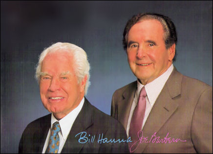

{kind=link}
History
The Begining
1786 is ultimately the year that would create 2D animation, as that year William Horner was born, William would later invent the zoetrope and bring 2D animation into existence.
The Zoetrope (1832)
The Zoetrope was invented in its first form around 1830s, which was often mistranslated as wheel of devil. William Horner was a British mathematician and pioneer who created the Zoetrope. He originally named it the "Deadalum"(wheel of devil). The Daedalum was an optical device that could create the illusion of movement.
The zoetrope consisted of a cylinder with equally spaced slits in that had images between. As the drum span, the viewer would peer through the slits and see the frames moving rapidly, which would create the illusion of animation. Unfortunately the Daedalum failed to become popular until 23 years later.
The Kinetoscope (1888)
Thomas Edison invented the Kinetoscope. While his most notable and famous inventions that allowed us to utilise electricity are what most people think of when they hear his name, Edison's advances in 2D animation were incredibly valuable and also allowed us to work with real imagery in cinema.
The Kinetoscope was a large, bulky device that created the illusion of animation by continuously moving an endless loop of film over a light source with a rapid shutter. The user would have to look inside using a peephole, which meant that only one person at a time could use this device. It was the first device to use film projection technology in the format that would become standard for film recording, both animated and 'real'.
Cinématographe (1890s)
The specific year the Cinematograph was patented and invented is a big vague, and some sources suggest it may have been another inventor altogether who was the true creator of the device, but it was known to have been invented in the 1890s. The Cinematograph used the Kinetoscope concept as a base and made many improvements to it.
Antoine Lumière presented his son with a piece of Kinetoscope film. Seeing the potential to revolutionize motion picture, his sons began working on their own motion picture device. They combined the idea of a camera, a projector and a printer to create what they would call the "Cinématographe". Finally and generally most significantly, the machine was designed so that it could be projected onto a screen so groups of people could view it at once.
Fantasmagorie (1908)
On January the 4th 1857, Emile Cohl was born, Emile would go on to create the first fully animated 2D film."Fantasmagorie" was a 2d animation that was created in 1908 by using thousands of black and white drawings of a stick figure.
It consisted of over 700 hand drawn images, each running on 'twos', the film lasted for mere 70 seconds but rapidly gained fame and made 2D animation's popularity and fame increase dramatically. Walt Disney is often accredited with producing the first ever 2d animation but in real it was Cohl who was the true inventor.
Steamboat Willie (1928)
Walt Disney was born in 1901 back then nobody could guess or imagine him or even anyone to become as famous and successful as he became, especially with 2D animation which was a concept relatively few people had an interest in or saw potential in. He went on to created one of the first ever widely-distributed 2d animations in 1928. Steamboat willie was the first 2D animation to include fully synchronised sound effects.
Steamboat Willie used a technique called cell animation/cell shading where rather than shading via smooth gradients shadows were drawn as solid blocks of colour that didn't change in opacity or specific shade as they went down the object. This was also the first introduction of the character "Mickey Mouse", who would go on to become one of the most widely-recognised cartoon characters in human history.
Disney, Warner Brothers, Hanna-Barbera (1930's -1970's)
During the 1930s and 1970s, more companies started to expand on creating 2d animations. The three most notable during this time period were Walt Disney, Warner Brothers and Hanna-Barbera. After the introduction of colour television, these were now starting to be broadcast exclusively
Walt Disney created countless feature-length films during this time period, along with more unique characters such as Donald Duck and Goofy.
Hanna-Barbera studios was founded by William Hanna and Joseph Barbera. The studio created famous animated series such as the Flintstones, Yogi Bear, The Smurfs, Jonny Quest, Scooby-doo and Tom and Jerry. Hanna and Barbera have since died and the studio became a part of Warner brothers, ceasing to exist as its own entity. Hanna-Barbera is considered to have "dominated" American animated television for over three decades
In 1978 Albert, Harry, Jack and Sam Warner founder Warner brothers studios, which is now one of the largest animation studios in the world, owning properties such as the Looney toons. It was accompanied by unique characters such as Bugs Bunny, Daffy Duck and Porky Pig. It was especially made for television films, specials and commercials.
Present Day (CGI)

Nowadays the vast majority of 2d animations are produced by computer-generated imagery (otherwise known as CGI). Good examples of this are in shows such as South Park, Family Guy or The Simpsons. CGI saves both time and money due to the simplicity and ease-of-use. Character models can be duplicated and changed rather than having to be redrawn constantly, for example. This method allows animations to be made within as short as a few days, depending on the length and quality of the animation.
Various animation software and tools such as after effects and flash are used to create the frames. Similarly, Toon boom studios is a company that produces various kinds of animation. production software. The software ranges from creating storyboards to the actual animation itself. Toon Boom software is used by many well-known animation companies such as Warner brothers and Disney.
Overall, 2D animation has taken massive leaps and completely changed in everything but the basic concept of rapidly changing images giving the illusion of motion. 2D animation has come a long way. From Fantasmagorie in 1908 to the countless cartoons and Flash animations of today, 2D animation has brought viewers into fantastic worlds and places only thought possible through imagination. This time-consuming process has been made easier as the years go by. Even though 3D animations are becoming very popular, there will always be a place for 2D animation.